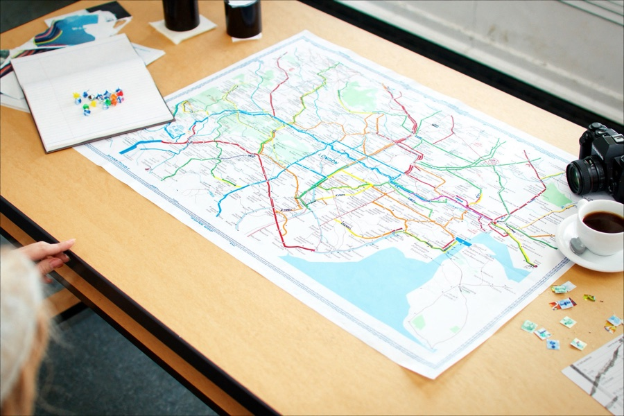

תכנון טיול ללונדון, בעברית
תכננו את הטיול שלכם ללונדון
מההתחלה ועד היום האחרון
בונים מסלול יומי מותאם, מוצאים אוכל כשר על המפה, ויודעים בדיוק למה לצפות בחודש שבו אתם טסים
- חינם, בלי הרשמה
- מידע שנבדק ומתעדכן
- בעברית, למטיילים ישראלים
מה אתם צריכים עכשיו?
בוחרים נושא ומגיעים ישר למדריך המלא שלו

הכלי המרכזי שלנו
בונה המסלול: מה מקבלים בסוף?
- מסלול לפי ימים, כשכל יום מרוכז באזור אחד של העיר
- מסלול אוטומטי מכמה שאלות קצרות, או בנייה לבד מתוך יותר מ-150 מקומות
- מפה לכל יום, ושיתוף המסלול בקישור
- הסבר קצר על כל מקום, וקישור להזמנה כשצריך
באיזה חודש אתם טסים?
לכל חודש עמוד משלו: מזג האוויר, שעות האור, מה קורה בעיר ומה להזמין מראש
לונדון החודש: מזג אוויר ואירועים, והחודש הבא: מה להזמין מראש
מה חדש בלונדון עכשיו
אטרקציות שנפתחות, אירועים שמתקרבים ושינויים שכדאי להכיר לפני שטסים
איך אנחנו בודקים מידע
- תאריך בדיקה גלוי. מחירים ורשימת המקומות הכשרים מציגים מתי נבדקו לאחרונה.
- האתר הרשמי של המקום. כשיש לו אתר רשמי, הקישור אליו מסומן "אתר רשמי".
- קישורי שותפים מסומנים. ליד קישור כזה כתוב שאם תבוצע הזמנה דרכו, GoLondon עשויה לקבל עמלה.